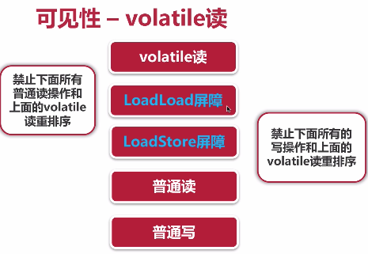
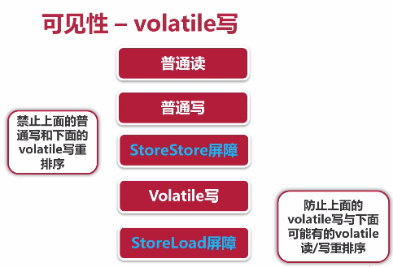

线程安全性-可见性
Sep 01, 2018 7:37·215 words ·1 minutes read
可见性
导致共享变量在线程间不可见的原因
- 线程交叉执行
- 重排序
- 共享变量更新后的值没有在工作内存和主内存及时更新
JMM关于synchronized的规定
- 线程解锁前， 必须把共享变量最新值刷新到主内存
- 线程加锁前， 将清空工作变量中共享变量的值， 从而使用时需要从主内存重新读取最新的值
volatile
通过加入内存屏障和禁止重排序优化来实现
对volatile变量写操作时， 会在写操作后加入一条store屏障指令， 将本地内存中的共享变量刷新到主内存
对volatile变量读操作时， 会在读操作前加入一条load屏障指令， 从内存中读取共享变量

